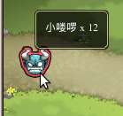

塔防游戏部落守卫战新手攻略
作者：TeliuTe 来源：基础教程网
一、游戏登录 返回目录 下一课部落守卫战是一个塔防游戏，玩家建立各种防御工事来消灭来犯敌兵；
1、用户登录
1）百度游戏网址：http://youxi.baidu.com/bl/index/，腾迅QQ用户游戏网址：http://bl.qq.com，在左侧点“开始游戏”，百度要在右侧选择一个区；
2）第一次会出来游戏说明，点“继续”大概看一下；
3）进入对战界面，点击小圆坑可以选择建造防御，分别可以建造箭塔、炮塔、魔塔和勇士塔，
点击右下角的图标按钮开始游戏，也可以点路起点的缩小的图标开始，可以看一下进攻敌人的类型；
4）左上角有生命值红心图标，旁边是金币数，建造防御要花费金钱，下边是敌兵的攻击波次，路终点是自己的大本营，敌兵过去后会减少生命值；

5）分别点击建好三个箭灵塔，点击右下角开始按钮，敌兵源源不断从起点过来；
6）随着战斗进行，接下来可以建造炮灵塔和勇士守卫，点击勇士塔里的小红旗，可以调整勇士的布防位置；
7）随着战斗进行，左下角还会出来辅助防御的火流星和援兵，每隔一定时间就可以建造出一批，点击可以放置到战场中；
8）战斗胜利后，就可以创建酋长，建立自己的部落了，在左侧选择一个头像，看一看右边自己所属的国度，点击“进入游戏”进入部落主界面；
本节学习了登录和快速建造的基础知识，如果你成功地完成了练习，请继续学习下一课内容；
本教程由86团学校TeliuTe制作|著作权所有
基础教程网：http://teliute.org/
美丽的校园……
转载和引用本站内容，请保留版权信息和本站链接。